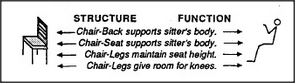
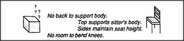

Many things that we regard as physical are actually psychological. To see why this is so, let's try to say what we mean by chair. At first it seems enough to say:
A chair is a thing with legs and a back and seat.
But when we look more carefully at what we recognize as chairs, we find that many of them do not fit this description because they don't divide into those separate parts. When all is done, there's little we can find in common to all chairs — except for their intended use.
A chair is something you can sit upon.
But that, too, seems inadequate: it makes it seem as though a chair were as insubstantial as a wish. The solution is that we need to combine at least two different kinds of descriptions. On one side, we need structural descriptions for recognizing chairs when we see them. On the other side we need functional descriptions in order to know what we can do with chairs. We can capture more of what we mean by interweaving both ideas. But it's not enough merely to propose a vague association, because in order for it to have some use, we need more intimate details about how those chair parts actually help a person to sit. To catch the proper meaning, we need connections between parts of the chair structure and the requirements of the human body that those parts are supposed to serve. Our network needs details like these:
Without such knowledge, we might just crawl under the chair or try to wear it on our head. But with that knowledge we can do amazing things, like applying the concept of a chair to see how we could sit on a box, even though it has no legs or back!
Uniframes that include structures like this can be powerful. For example, such knowledge about relations between structure, comfort, and posture could be used to understand when a box could serve as a chair: that is, only when it is of suitable height for a person who does not require a backrest or room to bend the knees. To be sure, such clever reasoning requires special mental skills with which to redescribe or reformulate the descriptions of both box and chair so that they match despite their differences. Until we learn to make old descriptions fit new circumstances, our old knowledge can be applied only to the circumstances in which it was learned. And that would scarcely ever work, since circumstances never repeat themselves perfectly.